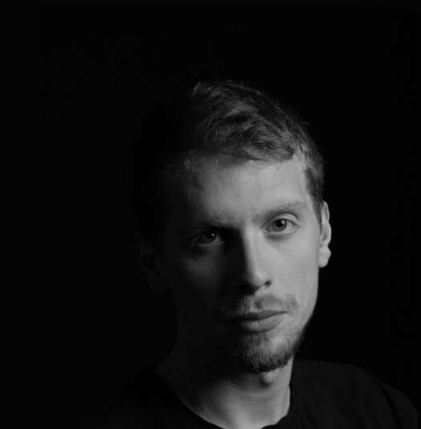

Berk Nazlım
Designer and interior architect. Istanbul Technical University, Faculty of Architecture, Department of Interior Architecture, class of 2026.

I design spaces that belong to their place and to the people who use them.
I am an Istanbul-based designer and interior architect, born in 1999. I studied in the Department of Interior Architecture at Istanbul Technical University's Faculty of Architecture.
At ITU I learned to draw by hand, to think in section and to test ideas with physical models, often built from the same materials as the real thing: bamboo and walnut for a book café, cardboard and wood for a hillside retreat.
Alongside my studies I have worked on construction sites and in design offices: managing repairs in a hotel lobby, making material decisions for international hotel brands, planning stone paving for a shopping mall and designing a family apartment from start to finish. I enjoy the whole path, from the first concept to the last brass inlay.
Interior Architecture degree, Istanbul Technical University
Faculty of Architecture, Department of Interior Architecture.
Freelance interior designer
Interior of a residential apartment in YediMavi, Zeytinburnu, for a married couple.
Intern, Topaz Construction
Construction site of the second phase of the 5. Levent projects.
Advisor and schematic designer, Legra Design
Planned stone paving to correct ground irregularities left by rough-construction errors at a shopping mall in Tersane İstanbul, Haliç.
Intern, Carimond Invest, Design Office
Hotel investment and construction for global brands; design and material decisions on the investor's side.
Site manager, The Wall Architecture
Repair and painting of the lobby and service areas of the Swissôtel The Bosphorus in Maçka.
What guides the work
Context first
Every site has a history, a climate and a community. Good design starts by listening to all three.
Material honesty
Natural, local materials, used where they perform best, age well and make a space feel calm.
Down to the detail
A strong idea only works if it survives to the last joint, handle and inlay. That is where I spend my time.